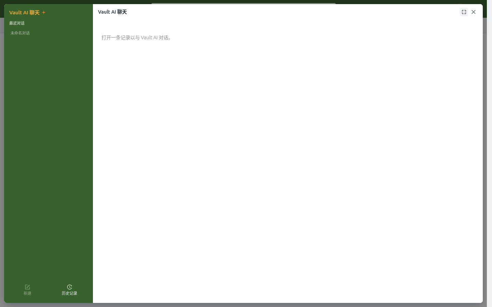
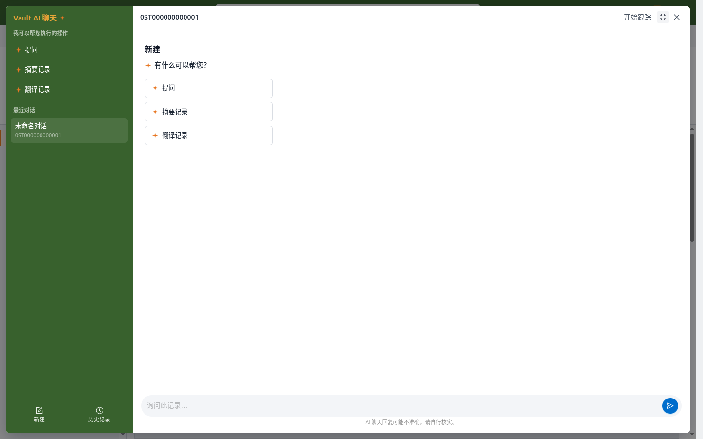
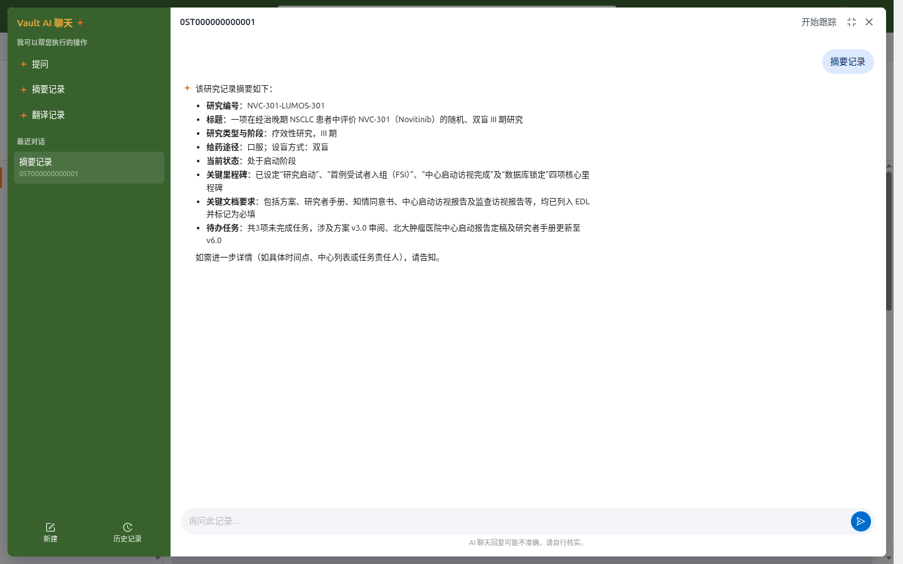
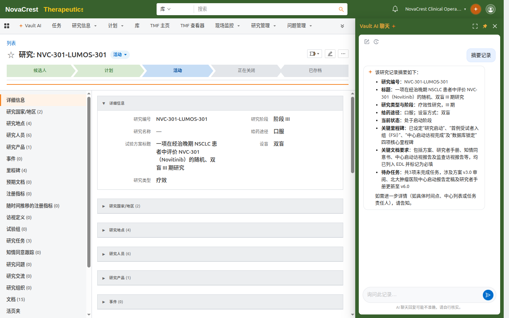

打开记录上下文
打开任意记录详情页（研究、文档、组织等），点击页头右上角的 Vault AI 聊天 按钮。浮动面板会识别当前记录，并切换为该记录的专属对话，输入框提示变为"询问此记录…"。
没有打开记录时，面板显示提示"打开一条记录以与 Vault AI 对话"。

*未打开记录时：面板提示先打开一条记录。*
三种快捷操作
记录上下文面板提供三个快捷操作：
| 操作 | 作用 |
|---|---|
| 提问 | 就当前记录自由提问 |
| 摘要记录 | 一键生成结构化摘要：关键字段、里程碑、文档要求与待办任务 |
| 翻译记录 | 将记录内容翻译为其他语言 |
点击操作按钮后，Vault AI 自动发起对应请求；例如在 NVC-301 研究记录上点击"摘要记录"：

*研究记录上的聊天面板：提问 / 摘要记录 / 翻译记录。*

*"摘要记录"生成的研究摘要：编号、阶段、里程碑、EDL 与待办任务。*
开始跟踪
面板顶部的 开始跟踪 按钮为当前记录建立专属对话。跟踪开启后：
- 该记录的对话出现在面板的最近对话列表中，随记录 ID 命名。
- 返回该记录时会自动恢复这段对话（管理员开启自动切换后）。
- 可以随时在面板内继续提问，问答始终围绕这条记录。
面板停靠
点击面板顶部的 面板 按钮，面板会停靠到页面右侧：左边继续浏览记录字段，右边保持对话不中断。停靠后可以随时：
- 全屏：展开为整页对话；
- 浮动：恢复为居中的弹窗模式；
- 关闭：收起面板。

*停靠模式：左侧浏览记录，右侧继续对话。*
提示
- 不同记录的对话相互独立；同一条记录上的对话对所有有权限的用户共享。
- 需要跨记录提问（如"这个库有哪些研究？"）时，请使用 Vault AI 标签页，参见 与 Vault AI 对话。